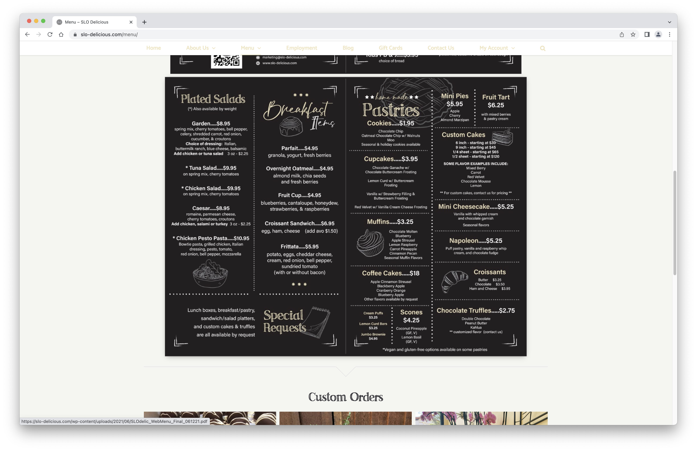
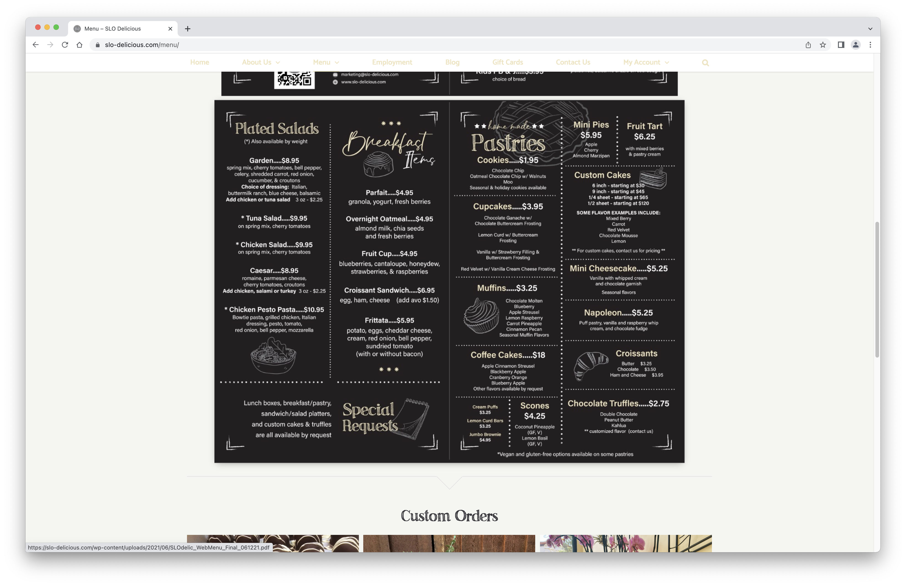
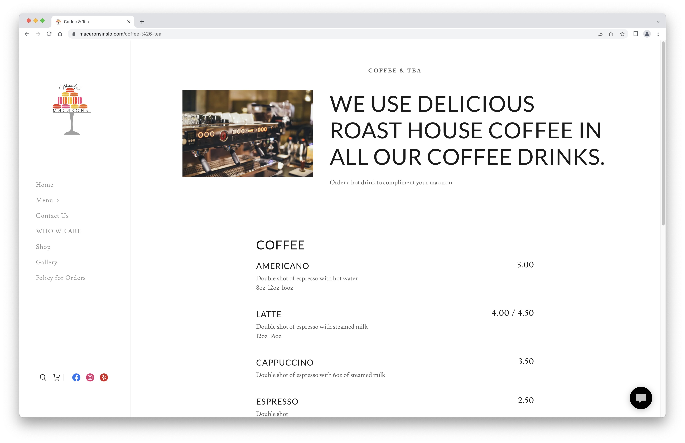
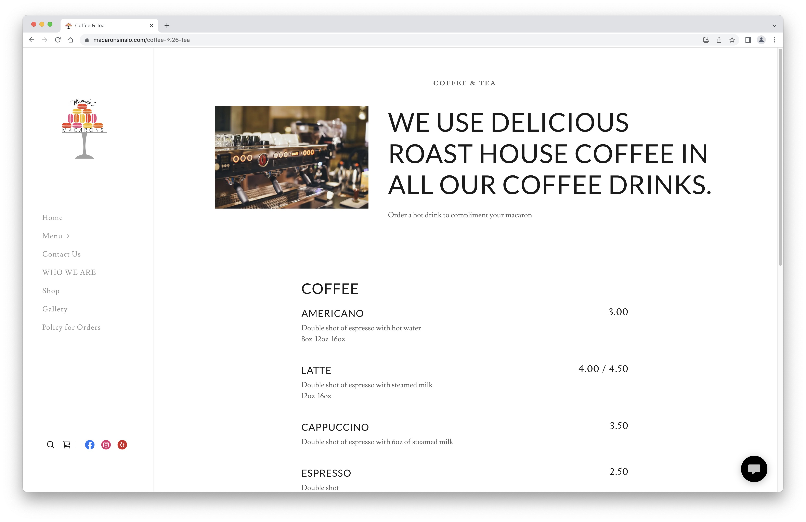
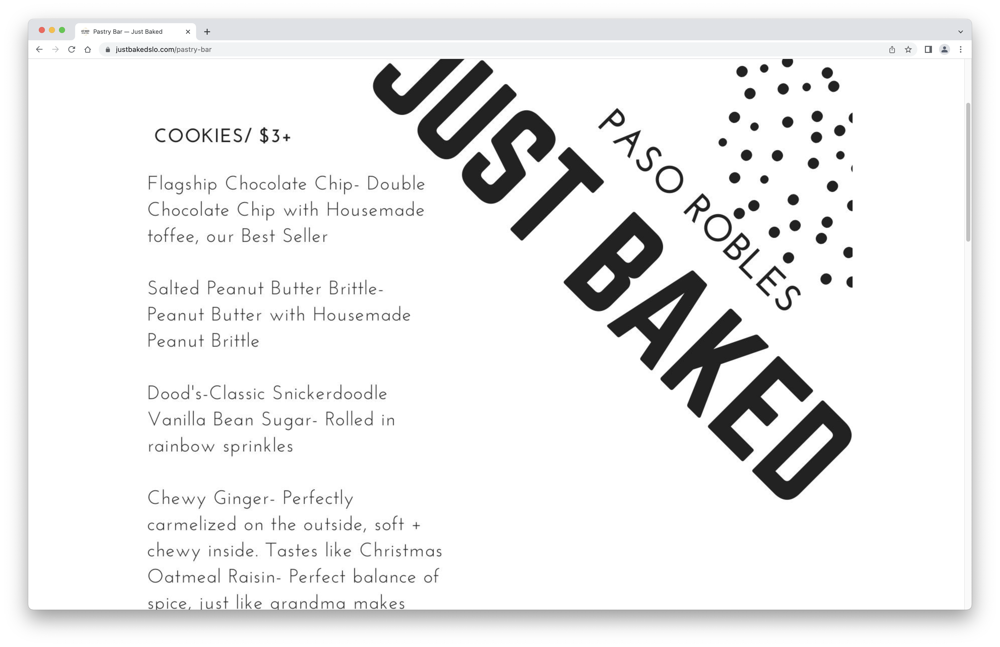
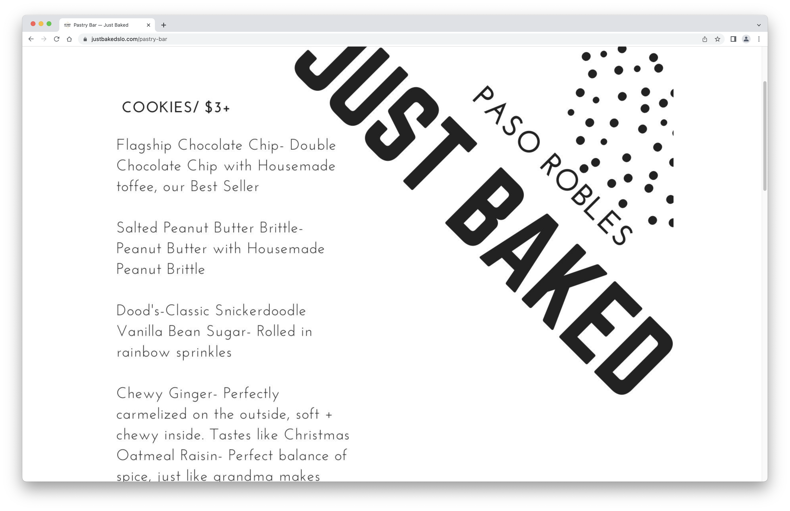

Final project proposal
Introduction
Central Coast Cakes and Bakery
A locally-owned and operated cake and bake shop in the heart of Downtown San Luis Obispo.
Target audience
People interested in shopping locally for baked goodies in San Luis Obispo.
This site is for customers to look at the Central Coast Cakes and Bakery menu, and place an order for pickup.
Comparative analysis
SLO Delicious
 

Monika's Macarons & Bakery Boutique
 

Just Baked Cake Studio and Bakery
 

Website content
Home
A locally-owned and operated cake and bake shop in the heart of Downtown San Luis Obispo.
[A delicious specialty cake surrounded by various cupcakes, all made by Central Coast Cakes and Bakery]
About
Born and raised in San Luis Obispo, our founders have always had a love for the community. After completing culinary school in New York, Megan and Charlie moved back to SLO to give back to the community through delicious desserts.
[An employee preparing items and ingredients for a cake in the Central Coast Cakes and Bakery kitchen]
Menu
Sweets and Treats made to order, from scratch.
Cakes
-
Chocolate Chip Cookie Dough
brown sugar cake, our very own chocolate chip cookie dough*, brown sugar buttercream, mini chocolate chips *cookie dough filling is egg-free, and safe to eat “raw"
Starting at $35
-
Almond Raspberry
almond cake, raspberry buttercream, raspberry curd
Starting at $30
-
Funfetti
vanilla cake loaded with sprinkles, vanilla buttercream, more sprinkles
Starting at $28
-
Triple Lemon
lemon cake, lemon curd, lemon buttercream
Starting at $32
-
Caramel Toffee Crunch
vanilla caramel swirled toffee cake, vanilla buttercream, toffee pieces
Starting at $32
-
Custom Cake
We would love to create a super cool cake for your birthday party or celebration! Our team can create whatever you can think up!
Please contact us for details on pricing for custom cakes
Other Pastries
-
Lemon Bar
fluffy lemon mousse on shortbread crust
$3.50
-
Coconut Pecan Bar
coconut flakes and pecans sprinkled on top of chocolate mousse on a shortbread crust
$3.50
-
Salted Peanut Butter Brittle Cookie
peanut butter with housemade peanut brittle
$3
-
Chocolate Chip Cookie
double chocolate chip with housemade toffee
$2.75
[Our delicious Triple Lemon Cake in the 'small' size]
[Our delicious Chocolate Chip Cookie Dough Cake in the 'small' size]
[A delicious custom cake with specialty sculpted fondant in the 'small' size]
Location
Located in the heart of Downtown San Luis Obispo.
1129 Garden Street San Luis Obispo, CA 93401
[Map of San Luis Obispo with a pin dropped where Central Coast Cakes and Bakery is located.]
Contact Us
Have comments, questions, or concerns? We would love to hear from you!
Connect with us on Social Media!
[Email, phone number, and social media sites of Central Coast Cakes and Bakery for people to use when contacting the business.]